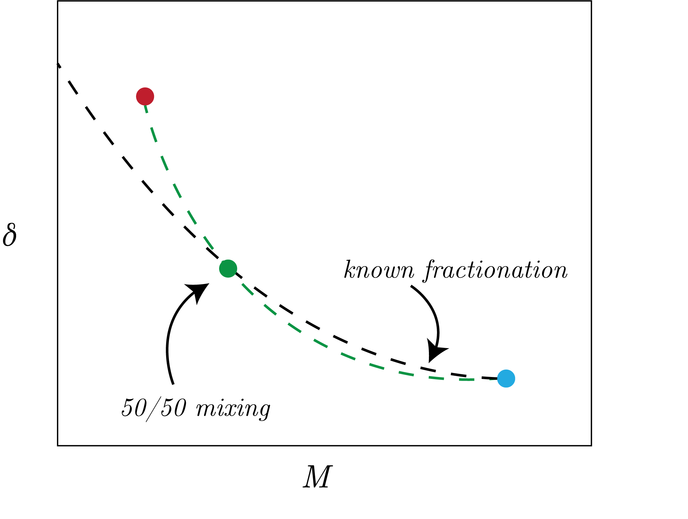

We consider the following system:
\begin{equation}
A + B = C,
\end{equation}
where we have that $A$ and $B$ are mixed to make $C$.
We have then that mixing dynamics use the following equation, following mass balance for moles $M_i$:
\begin{equation}
M_C \delta_C = M_A \delta_A + M_B \delta_B.
\end{equation}
Therefore, we get that for $f$ the fraction:
\begin{equation}
\delta_C = f_A \delta_A + (1-f_A) \delta_B.
\end{equation}
An important concept is that in this kind of mixing, we have that mixing is not linear, this is to say that this is not conservative.
We can make a "Keeling Plot", in which we plot $1 / M_i$, in which we case we have linear mixing.
An example of this is plotted in Fig. 1 below.

Fig. 1: Mixing of two different states that follow a nonlinear (nonconservative) mixing pattern and land on a known isotope fractionation effect ($\epsilon$ value).
A Mixing Example
Case I
We consider two states. The first state is $\left[\text{NO}_2^-\right] = 40 \: \left[\mu\text{M}\right]$ with a $\delta^{15}$ = 5 [‰].
The second state is denitrified water, for which we remember that $\epsilon_{DNF} = 25$ [‰], of $\left[\text{NO}_2^-\right] = 10 \: \left[\mu\text{M}\right]$.
Using our closed, irreversible (Rayleigh distillation) equation, for $f=\frac{10}{40}$, we get:
\begin{equation}
\delta^{15}\text{N} = \delta^{15}\text{N}_0 + \log\left[f\right]\epsilon_{DNF} \simeq 39.7 \: \left[‰\right].
\end{equation}
Then, we apply out mixing equation to get:
\begin{equation}
\delta_{mix} = \frac{(20\cdot 5) + (10 \cdot 39.7)}{(40 + 10) / 2} \simeq 23.9 \: [‰].
\end{equation}
Case II
We have the same setup but with the denitrification drawdown to $4 \: \left[\mu\text{M}\right]$. This then gives $\delta_{mix} \simeq 62.5$ [‰].
Therefore, we see that the levers can really matter, i.e., you can change both the concentration as well as the isotope valuesm, which can have counteracting effects.